WORKPLACE STRATEGY · 2019–2021
Built for 800+
How do you grow an office from 425 to 800+ seats while hiring at full speed, then keep it safe through a pandemic?
PROJECT AT A GLANCE
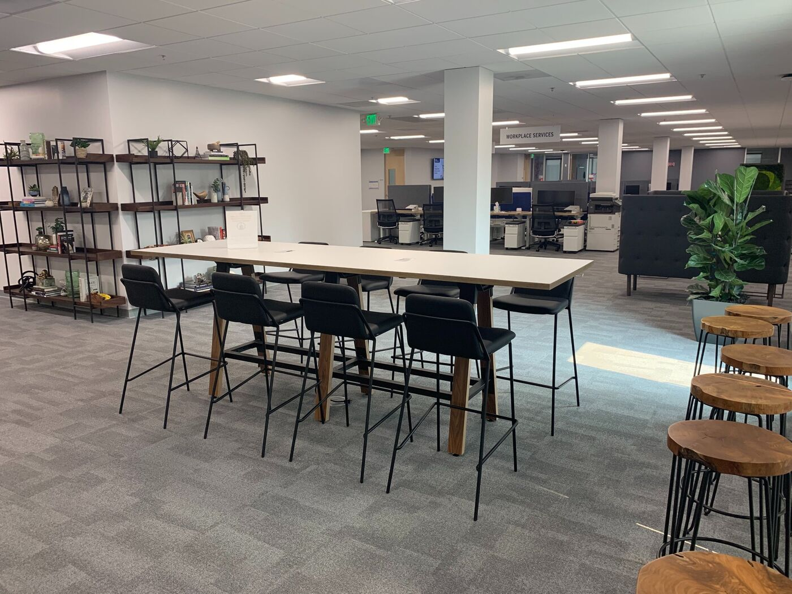
01 // THE PROBLEM
10% over capacity, and still hiring
Stakeholders pushed for desks in the hallways. I held the line.
Coursera was already over capacity, with hiring set to grow 39% over the next three years. Desks were squeezed in wherever they fit. When I said the hallways were off limits, stakeholders asked why and pushed to make it happen anyway. Hallways are exit routes, so that was a safety line I wasn't going to cross.
Pencil-and-paper floor plans couldn't keep up anymore, so I brought in SpaceIQ to track seats and plan moves, and rolled out its app so employees could find coworkers' desks and conference rooms across three floors in two buildings. The real fix was more space, planned around how teams actually work together.
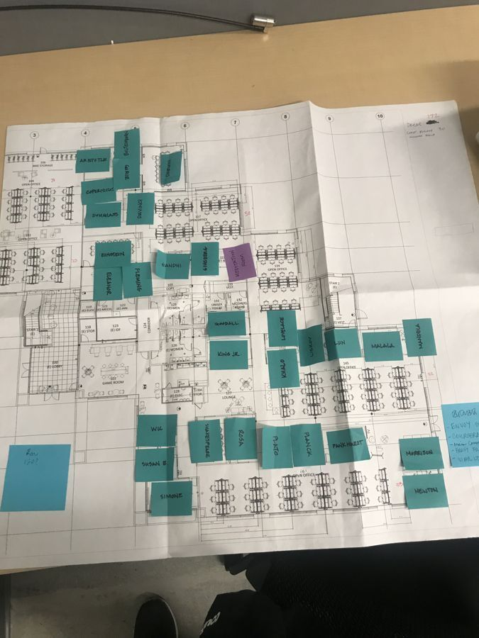
02 // PHASE 1
Opening floor 1 at 351 Evelyn
- 381 E Evelyn was our main building. Coursera took over 351 Evelyn, with build-out beginning around January 2019 and interior work from March to September
- Met with E-Staff and organization leaders to understand each team's needs, which decided who moved from over-capacity 381 to the new floor
- Moved 125 employees over on September 14, 2019
- Let employees name the meeting rooms through a company-wide poll (they chose great thinkers)
- Bought time while floor 2 was planned, but didn't solve the problem alone
03 // PHASE 2
A $1.3M floor designed with data
With floor 1 full, I made the case for a $1.3M second-floor build-out using our hiring metrics, and got it approved.
Floor 2's footprint was already set. Everything inside it was mine to plan, even down to the placement of every outlet and floor box. Before choosing a single desk, I looked at how the office was really used: badge data, desk occupancy, and which teams needed to sit near each other.
I used SpaceIQ to model move scenarios, then partnered with the interior designer and coordinated the vendors and general contractor through opening day on February 14, 2020.
I named floor 2's rooms after California landmarks, giving the new floor its own identity.
Meeting rooms were planned against a ratio: 1 room for every 7 people is ideal, and 1 to 10 is workable but not the best. Both floors were set up with plenty.
- 1Mapped team adjacencies
- 2Measured use with badge and desk occupancy data
- 3Modeled move scenarios in SpaceIQ
- 4Planned 172 workstations plus hot desks, collaboration zones, and focus rooms
- 5Scored three furniture vendors and selected InsideSource, then coordinated vendors and the GC, Vulcan Construction
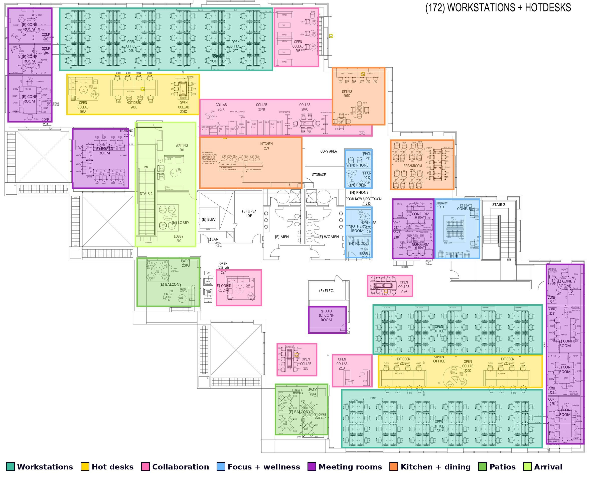
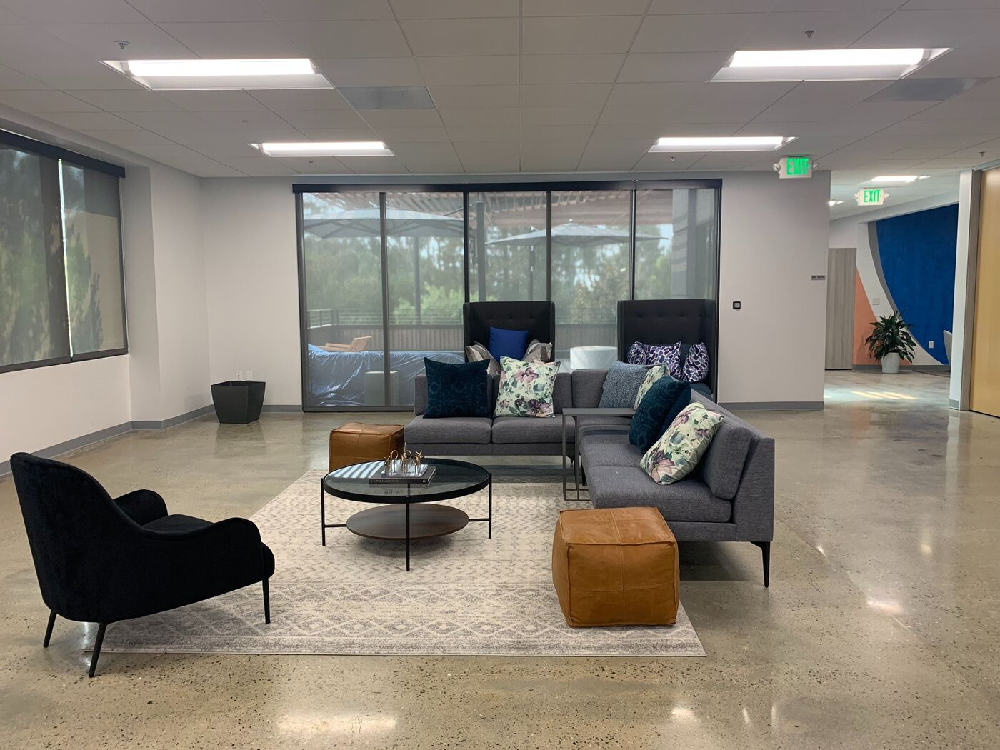
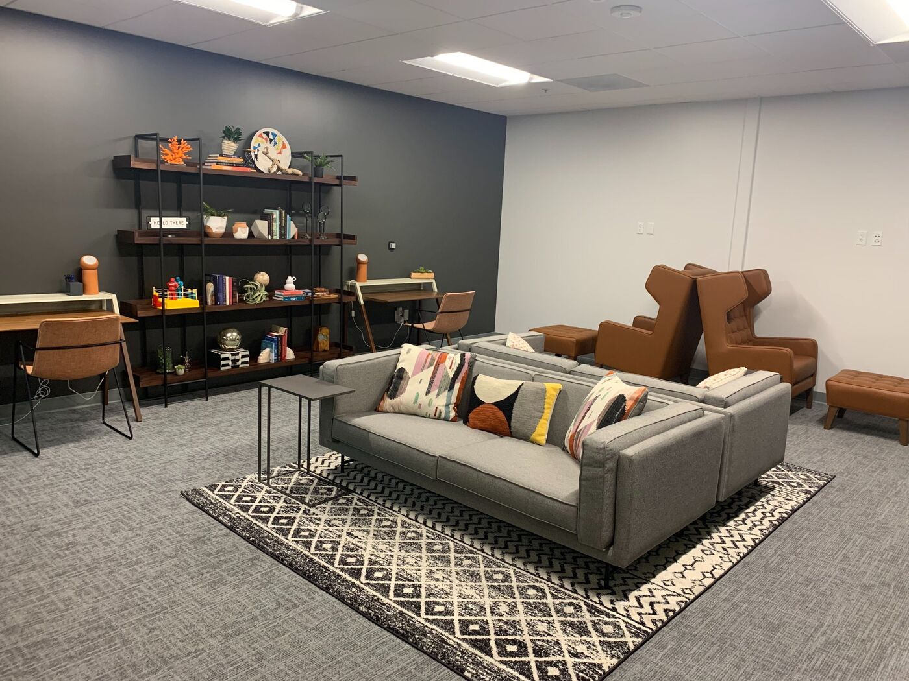
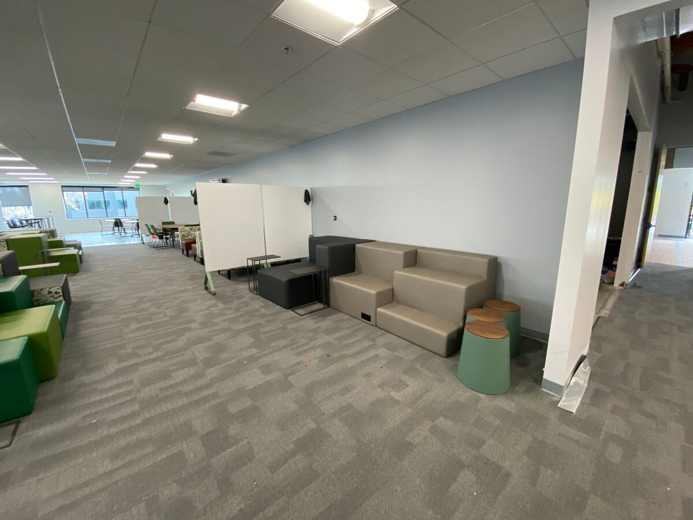
Floor 2, 2020. Furniture and styling by InsideSource.
Install day, February 14, 2020
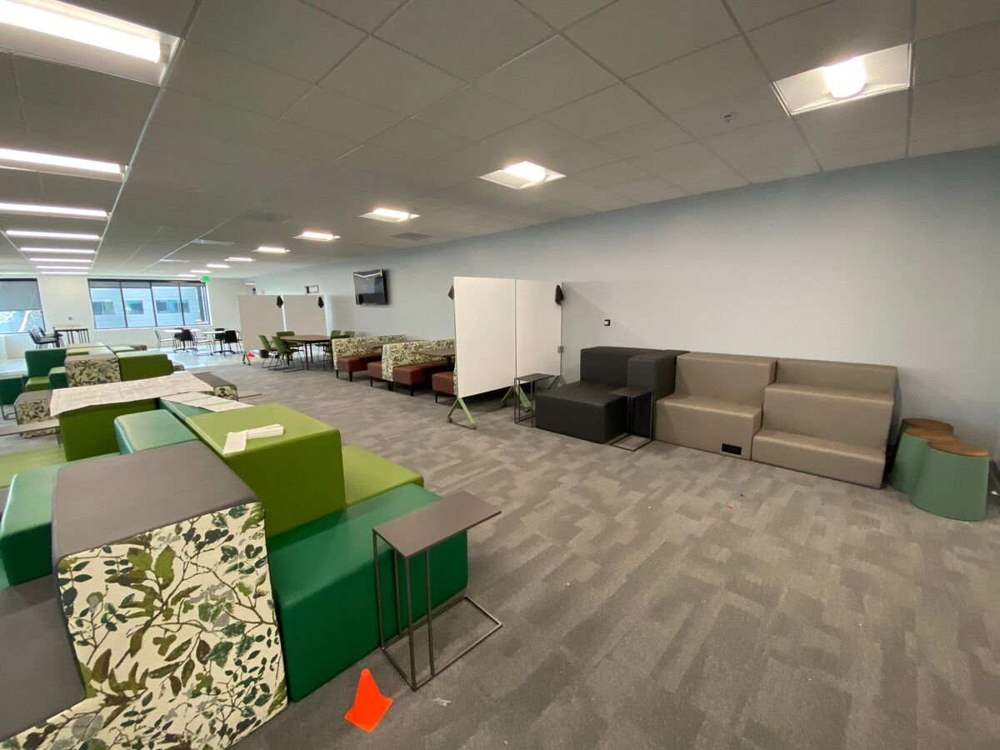
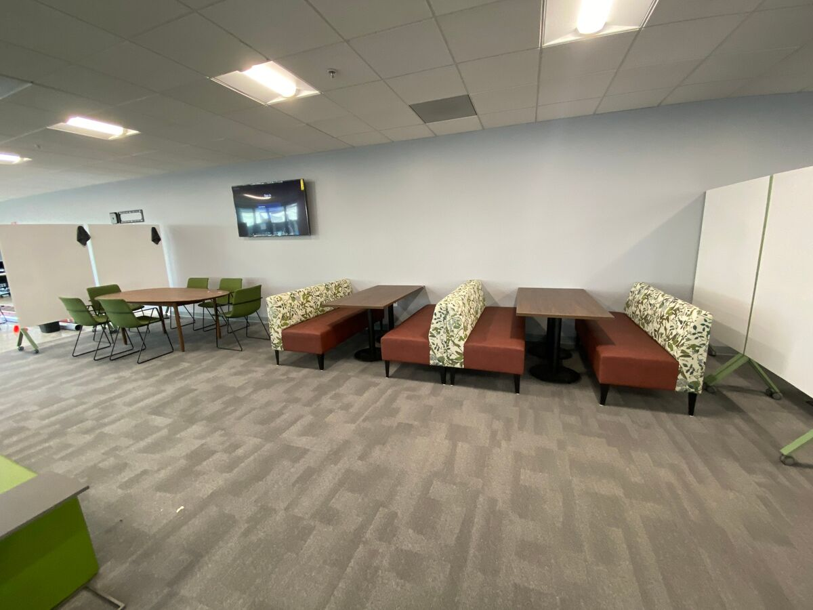
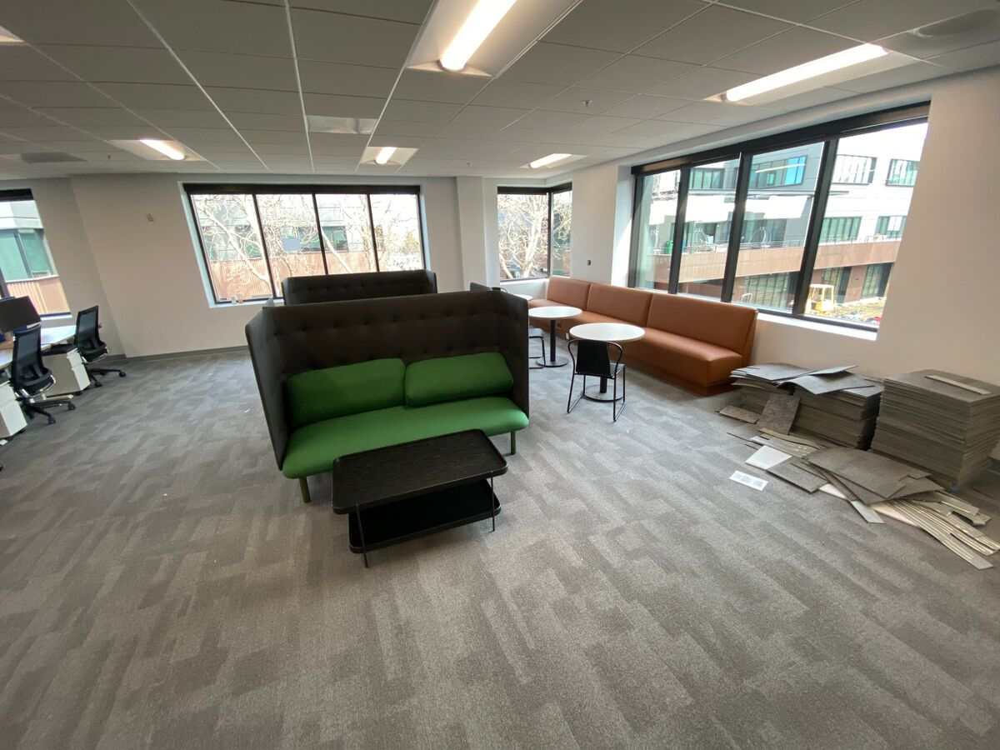
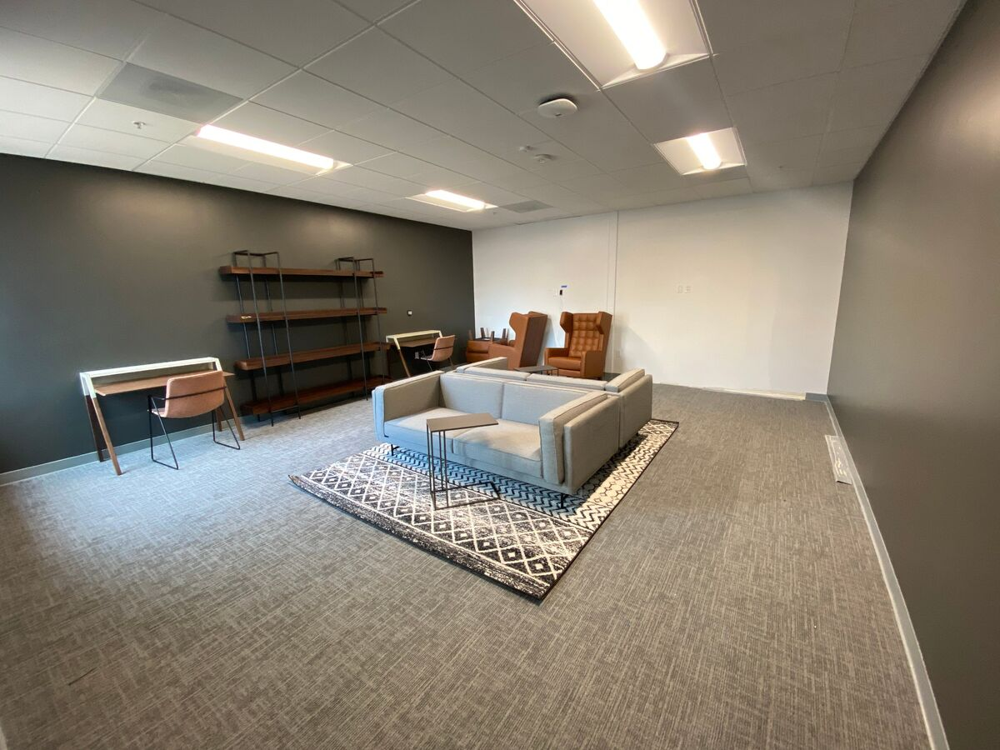
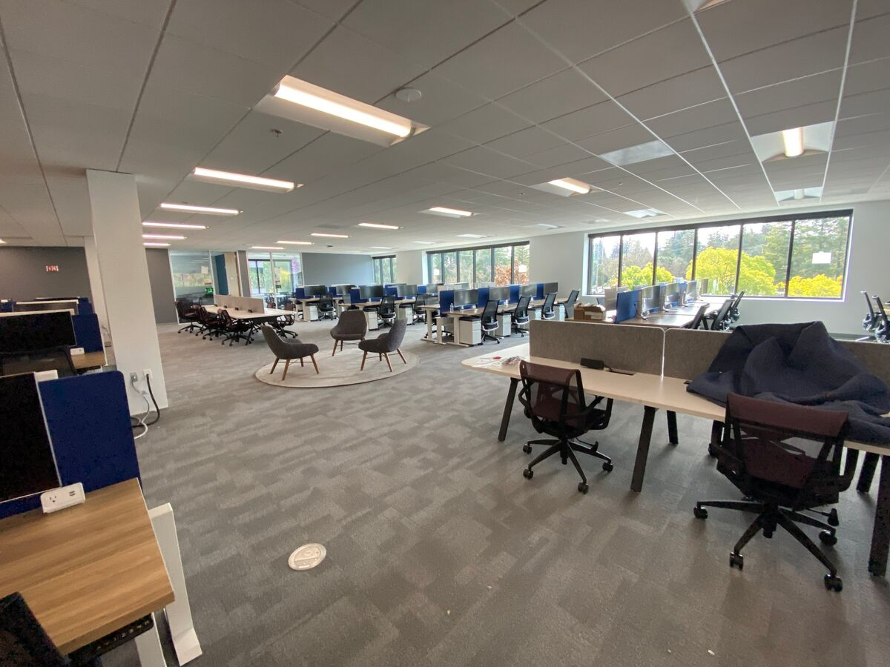
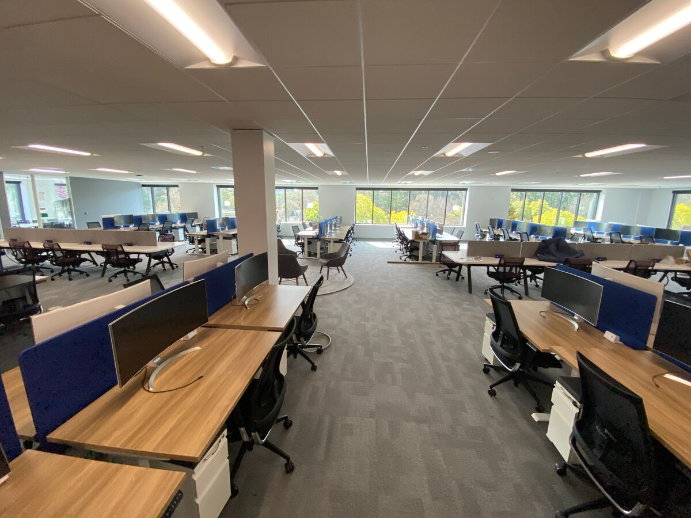
Collaboration zones, booths, focus seating, the library, and workstations, the day the furniture landed.
04 // THE DETAILS
First impressions are designed
The arrival
The stairwell from the lobby is the first thing people see on the way up. A mural with dimensional wood panels, backlit by sound-reactive LEDs, turned it into the front door of the new floor: light and color shift as people pass between floors. Mural by Strider Patton, 2019.
Movement brings energy to a space that can feel sleepy.
A second piece outside the floor 2 elevator gives the same arrival to everyone who can't take the stairs.
Footsteps and voices on the stairs set the mural's light in motion.
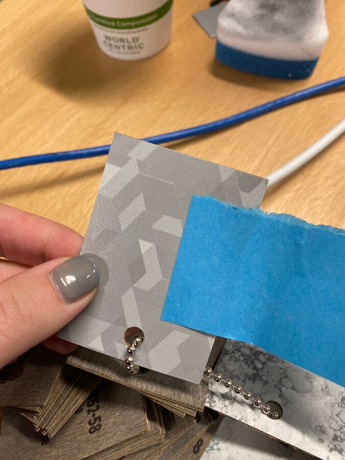
The IT bar
IT asked me to redesign their help bar. I chose a geometric gray laminate: neutral enough to age well, with enough pattern to keep it from feeling sterile. More tech bar than doctor's office.
05 // THE TWIST
Four weeks later, everyone went home
Floor 2 opened February 14, 2020, with a grand opening party. In March, COVID sent the company remote. A year later, when Coursera went public, I set up the building so a small group could be on site safely.
Reopening safely
- Designed building entry and occupancy limits to meet county COVID requirements
- Spaced all seating 6 feet apart
- Made sure everyone on site for Coursera's live NYSE listing broadcast (March 31, 2021) was COVID tested before entering the building
- As restrictions slowly eased, kept what helped: sanitization stations and enhanced daytime cleaning
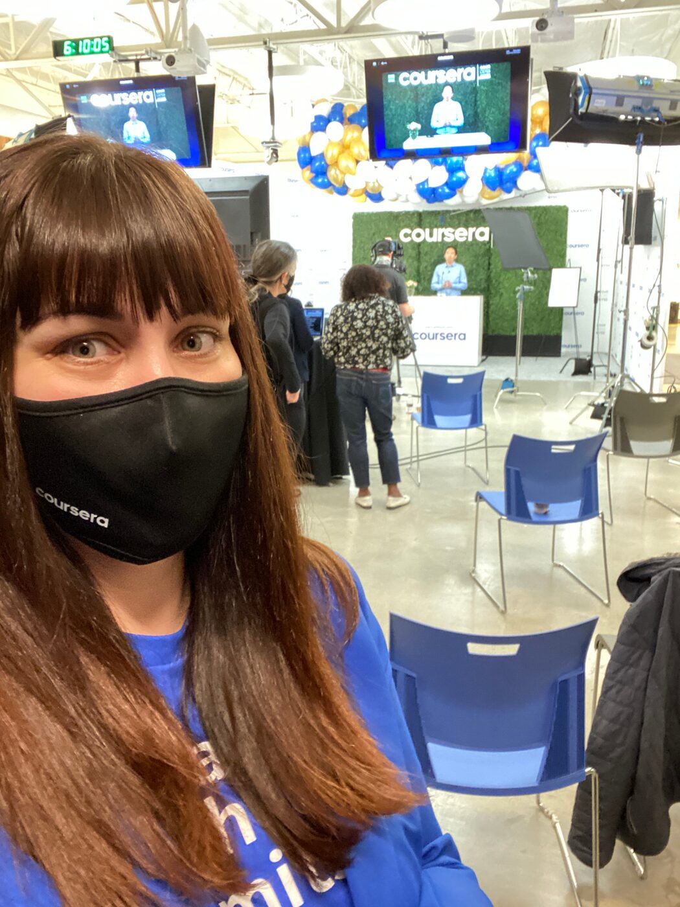
Me on IPO day, March 31, 2021, with seating spaced 6 feet apart. Broadcast set by the event production team.
Two years earlier, people were asking for desks in the hallways. On IPO day, I watched the company I'd helped make room for become a public company.
"Employees decide the moment they walk in whether a space meets their needs and is worth the commute."
STACY TOMASI